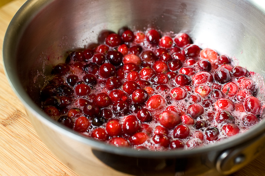

A YumYum Thanksgiving

Like a lot of people, I usually travel for Thanksgiving instead of hosting myself. This year, however, I’m able to create a full Thanksgiving dinner. I decided to do it a few days early in case any of you are still looking for some ideas for your own holiday meals.
I was really inspired by Vegan Menu’s Seitan Roulade and decided to take my own stab at it. It seemed like the perfect centerpiece. My recipe is very different than his, but if you’re looking for another filling idea, definitely check out his post!
The seitan in this recipe is easily made from vital wheat gluten. It’s wraped around a delicious, homemade herbed chestnut stuffing and then baked. I served it with fresh tangerine cranberry sauce, broiled green beans with slow roasted tomatoes, and fluffy mashed potatoes. Not pictured is a lovely mushroom gravy made with fresh vegetable broth.
You did all make your own vegetable broth, right?
The majority of this meal can be prepared in advance, so if you have the day before Thanksgiving to start cooking, your meal will be well under control by the time you wake up on Thanksgiving morning. Less time in the kitchen means more time celebrating with your loved ones! I’ve included a game-plan at the end of this post so you have an idea of exactly what you can do in advance.
To save even more time, stop by Trader Joes and pick up a box of their already prepared steamed and shelled chestnuts, packed in an airtight bag–not canned! This will save a ton of prep work and roasting time. I haven’t seen these available in any other store, but if you have any tips, do let me know in the comments. Prepping them from scratch works, too.
Alright, there are a lot of recipes to get to, so let’s get started!
Edit Dec. 2008: The seitan part of the roulade apparently sucks! It worked fine for me, but lots of readers are having trouble with it. Until I revise the recipe, beware! Make it at your own risk! :)
A YumYum Thanksgiving
Serves 8
Seitan Roulade with Chestnut Stuffing
Seitan
2 Cups Vital Wheat Gluten, (1 box of Arrowhead Mills brand)
1/4 Cup Nutritional Yeast
1/2 tsp Salt
2 1/3 Cups Warm Vegetable Broth
Mix gluten, yeast, and salt in a large bowl until well combined. Add the vegetable stock and gently mix with your hands until all of the dry mixture is moistened. You should have a soft, squishy, wet dough. Knead a few times, and agitate the dough by squeezing and pressing it.
Dump the dough out onto a large cutting board and use your fingers to press it out to a 12×18″ rectangle. If the dough is too springy, let rest for 15 minutes before rolling it out. Cut the dough into quarters:

Heat a large, non-stick skillet over high heat with some olive oil. Briefly pan-fry the seitan pieces until just barely golden brown on both sides. This gives color, flavor, and kick-starts the cooking process so your pieces will be easier to handle.

Set aside until you’re ready to roll up the roulades. Make the stuffing.
Chestnut Stuffing
2 Tbs Olive Oil
2-3 Shallots, chopped finely
10 Cremini Mushrooms, chopped (1 cup after chopping)
2 Ribs Celery, chopped
1 Box Trader Joes Prepared Chestnuts (about 1 1/4 cups, chopped)
7 Fresh Sage Leaves, chopped
2 Thyme Sprigs, leaves only
1 Tbs Fresh Chopped Marjoram
5 Cups Cubed Bread, (for homemade, see note)
1/2 to 1 Cup Warm Vegetable Broth
Salt
Pepper
Note: If making your own bread, take 1/2 of a 1 pound loaf of sourdough and slice into cubes. I leave the crust on! Spread out the bread on a baking sheet and bake at 300º F for 30 minutes, tossing half-way through.
In a large, deep skillet, heat oil and saute shallots until beginning to color. Add mushrooms and carrots and cook until softened. Add herbs and chestnuts. Add bread and toss. Add broth 1/2 cup at a time until stuffing is softened but not overly soggy. Season with salt and pepper. If not using for roulades, place stuffing in an oiled casserole dish and bake at 350º for 20-30 minutes, or until golden brown on top. If using for roulades, set aside to cool.
Place stuffing on top of a piece of seitan, covering the whole surface. Roll up the seitan, stretching it to make as tight a roll as possible. Let the roll rest on the seam.

With kitchen twine or any cotton string you have, tie up the roulade so that it doesn’t unroll:

Repeat for the three other sheets of seitan. Place the tied roulades on a baking sheet covered in parchment paper. Lightly brush with olive oil. Bake at 350º for 30-40 minutes, turning half-way through, until golden brown.

Let rest 5-10 minutes before slicing. Remove strings before serving!

Broiled Haricots Verts with Slow Roasted Tomatoes

Slow Roasted Tomatoes
2-3 Pints Grape Tomatoes
Oil
Salt
Pepper
Preheat oven to 350º F. Coat tomatoes in olive oil and season with salt and pepper. Place on a baking sheet covered with aluminum foil. Bake for 40-60 minutes until very soft and beginning to color. Can be made a day in advance.
Broiled Green Beans
16 oz Haricots Verts (or regular green beans)
Salt
Pepper
Olive oil
1 Pinch Sugar
Coat green beans in oil, and season with salt, pepper, and sugar. Place them on a baking sheet covered in foil.

Broil beans (just a few inches from the heating element of your oven) for 4-6 minutes or until softened and slightly browned. Toss with warm slow-roasted tomatoes and serve.
Mushroom Gravy
2 Tbs Olive Oil
1 Cup Chopped Cremini Mushrooms (measured after chopping)
1 Pinch Salt
2 Fresh Sage Leaves, chopped
1 Stem Fresh Thyme, leaves only
1 tsp White Wine Vinegar
Black Pepper
3 Tbs Earth Balance Margarine
3 Tbs Flour
1 Cup Vegetable Broth
Soymilk, for thinning
Heat oil in a large skillet and add mushrooms, salt, and herbs. Cook for 4-5 minutes until softened and add vinegar. Stir well. Add a few grinds fresh black pepper and remove mushrooms from pan. Don’t clean out the pan! Turn the head down to low. Add margarine and flour and whisk until a paste (or roux) forms. Slowly add vegetable broth, whisking all the time, until mixture is smooth. Turn the heat back up and whisk until the mixture thickens into a gravy. Add soymilk in small splashes if gravy becomes too thick. Season with salt and more pepper to taste.
Tangerine Cranberry Sauce
1 16 oz Bag Fresh or Frozen Cranberries
1 Cup Water
1 Cup Sugar
Juice from 1 Tangerine (about 1/3 cup)
Zest from 1 Tangerine
Heat all the above ingredients over medium high heat in a sauce pan. Stir occasionally.

The cranberries will pop, and after 10-15 minutes of cooking the sauce will thicken and no longer be watery. Refrigerate and serve when needed. Garnish with fresh slices of tangerine if desired.

I also served fluffy mashed potatoes, but I figured you probably don’t need a recipe for that. However, I can say that making mashed potatoes in a pressure cooker is my favorite way to prepare them. Since the potatoes are not submersed in water, they are extra light and fluffy. And they cook so fast, too! If you have a pressure cooker, dig it out to make your potatoes this year. You won’t be sorry.
Here’s how you can save time by preparing parts of this meal ahead of time:
Anytime before:
-Make vegetable stock, refrigerate for 1 week or freeze
One or Two Days Before:
-Make bread cubes for stuffing
-Make seitan, roll it out, pan fry it
-Make the stuffing
-Roll up the roulades, cover in plastic wrap, refrigerate
-Make the cranberry sauce
-Slow roast the tomatoes
The Day Of:
-Bake the roulades (40 Minutes)
-Broil the green beans (4-6 minutes)
-Make the gravy (10-15 minutes)
-Make the mashed potatoes (15-20 Minutes)
So yeah! That’s what I’m having for Thanksgiving this year. What are you having?

Your dinner looks beautiful and delicious! I have never made mashed potatoes in a pressure cooker and it sounds like a great idea. This may be a stupid question, but do you need to do anything different than putting them in there and cooking them until they’re soft?
For my pressure cooker, I add 1 cup of water and the trivet that came with the cooker. Then I add the potatoes (quartered russets or whole baby potatoes, peeled or unpeeled) and bring to full pressure. Cook for 5-12 minutes depending on the sized of the potatoes, let the pot release pressure naturally, and mash away!
Wow, Lolo that meal is wonderful looking and I can imagine each element tastes incredible. We wish you both a truly joyous Thanksgiving. We love you and miss you. Mom, Dad, Amy and the aniimals.
This looks amazing!!! Now I want to change my menu so I can make this seitan!
This looks wonderful! I will definitely have to try the seitan roulade.
That looks just smashing, as do all your posts! Can’t eat seitan, but I’m all over that stuffing!
Wow. Looks delicious!
Did you baste the roulades? They just look so lovely and brown.
I hope you and yours have a very happy Thanksgiving!
Just a light brush of olive oil and they brown right up – I was surprised at how golden they turned! You could baste with tamari towards the end if you wanted a little extra kick, though.
Well that looks delicious! I wish I was having dinner at your house :)
Oooo Lolo, everything looks delish, as usual!
I especially like that shot of the cranberries, they’re so pretty… And those beans sound wonderfully simple, which is perfect for Thanksgiving.
Thanks!
Great ideas! We did Christmas last Thursday, so I can relate to your celebrating on your own schedule. ;) I’m excited about the chestnuts; I’ve never tried them, and I have been rather curious about them ever since seeing them sold on the streets in NY when I was there a couple weeks ago.
Also, beautiful pictures, as usual.
These dishes look fantastic! I have been wishing for some chestnuts to try my hand at some recipes that call for them, however, search as I may I can never find any on Maui. The next time I am on the Mainland I will have to swing by Trader Joe’s (thanks for the tip!) and give your stuffing recipe a try.
Especially the seitan roulade looks amazing!
This looks fantastic! Thanks for the detailed photos. I’m defenitely trying this!
thank you so much for the step-by-step pictures! I always have a hard time conceptualizing the process of making seitan. Beautiful as usual!!
Thanks!
Awesome!! Your cranberry sauce is almost exactly the same as mine! (The only difference is I add a cinnamon stick.) I used to call it my Top Secret Cranberry sauce, but I suppose it isn’t really uber classified anymore. I <3 all your cranberry photos. :)
Delicious looking, as usual! Thanks for sharing! I can’t wait to try out a few of these recipes!
Whaou ! It seems gorgeous !
wow. i will be making this thursday for suuuurrrrrrre! wow.
What a beautiful spread. I have no idea about seitan.
Wishing you and yours a great thanksgiving :-)
You’re a genius! !
This looks fabulous! I tried making my own seitan last week and it didn’t turn out too well. This looks a little bit easier, so I’ll be trying it next week. I make my tomatoes and green beans like that all the time! Sometimes I mix asparagus with the green beans- it comes out really great.
Btw, I’ve seen the bags of steamed and shelled chesnuts in Middle Eastern grocery stores. The ones I’ve seen have the info in Hebrew on them.
You always have great idea! I love following your blog. I was wondering if you could suggest an replacement for mushrooms since I don’t eat them no is my family a big fan of them. I am so excited about trying this recipe out. Thanks
This all looks so amazing! I was planning on making seitan this Thanksgiving and was going to use Robin Robertson’s version on vegan.com but your recipe seems much simpler. So, I think I’ll do your seitan with my own cornbread (from the Joy of Vegan Baking) and Tofurky sausage stuffing.
I was going to make cranberry pomegranate sauce, a recipe I found in the latest Glamour, but I cannot resist tangerines so I think you just beat out another recipe, too!
Happy Thanksgiving. You are awesome for sharing these recipes and gorgeous pictures. Thank you.
Looks absolutely lovely! I’ve already prepared Rice n Peas and a curry squash stew to take with me to a very non-vegan friendly meal. I’m also taking along a crumb cake (yes, your recipe, thanks!) and, if I get time, carrot cake cupcakes from VCTOTW. I’ll be trying your roulades soon as I can after the holiday. Your blog is definitely on the list of things I give thanks for.
Thanks so much for the seitan recipe! I’d been making seitan piccata from the Veganomicon, and that calls for the seitan to be boiled. Silly me — I never thought about pressing it into squares and frying or baking… Thanks!
Oh wow, that looks so amazing. I am definitely going to try this sometime! Happy Thanksgiving!!!
This looks like such an elegant meal – really lovely. I’ve never seen or heard of seitan being used in roulade form – how creative!
Happy Thanksgiving!
oh goodness thank you for posting this. it looks wonderful and i was looking for something different to do this thanksgiving. after having tofurky so many times it’s just not that exciting anymore. i can’t wait to try this.
I have a Tofurky. It’s my first and now I’m lusting after this roast! I’ll save this recipe for Christmas!
In addition to the Tofurky we are having green beans, mashed potatoes, soysage dressing mushroom gravy, cranberry/pineapple/ginger sauce, and rosemary biscuits.
It’s my first Thanksgiving on my own……hope the in-laws enjoy the Vegan-ness!
Thanks for the recipes!!! I’m making the cranberry sauce right using clementines instead of tangerines. And the seitan sounds reallly good…
That looks and sounds great, have a wonderful Thanksgiving.
Thank you SO much for this!
How beautiful! I’m dying to try your receipe!
Everything reads and looks amazing, as always :-)
P.S. – Tag, you’re it! Check out what this means at: http://www.palatetopen.com/?p=362
Cheers!
Once again, you’ve outdone yourself! Amazing creative and photography. You put the rest of us to shame, fer sher. There’s no way to compete with you. Game over! You definitely rule.
Quick questions though:
What to I do with the mushrooms after removing them from the pan? Put them back in after the gravy’s done? Serve them separately? Toss ‘em?
And can we use balsamic vinegar instead of white wine vinegar?
Thanks!!
Ohh, good catch Julia! They go back in after the gravy is thickened. I think balsamic vinegar or even lemon juice would work, just taste as you go to make sure it balances and doesn’t overpower. You may choose to omit it altogether.
what a great meal!!! love your pictures, great colors and composition….
check this new vegan blog… hope you like it
http://veganricans.blogspot.com/
cheers!!!!
i’m going to a potluck and bringing vegan versions of these:
http://finefuriouslife.com/2008/05/14/meatloaf-cupcakes-with-mashed-potato-frosting/
plus pumpkin chocolate chip cupcakes with cinnamon icing!
Wow! I wish I’d seen this yesterday! I’m off to the in-laws dragging along “my food” for myself, daughter and hubby since the in-laws idea of vegetarian eating is salad and twigs & berries! LOL!! :) Can’t wait to get home and make our own veggie thanksgiving.
I”m thankful for your blog and all the wonderful recipes you create which inspire me!
Holy crap, that looks good! And you make the seitan roulade look so easy! It’s too late for me to try this on Thanksgiving as I’ve already bought my Field Roast. But I may make this for a fancy weekend meal very soon!
Thanks for this recipe! It looks so good I decided last minute to change my menu and am going to try making it tonight!
Btw, I put “seitan roulade” in google to find this post again, and thought I should let you know in case you haven’t seen it- I came across this website that appears to be stealing your entire post and other’s post as well: http://gastronomy.arely.co.uk/ Not cool!
Good luck with the roulade! Unfortunately there are a lot of sites that steal my content via RSS, but I’ve decided for now to keep a full-feed for people who enjoy reading my posts that way. I wish there was a better way to stop them from stealing my content!
Yum Yum is right! I tried seitan roulades before and they came out sort of tough and chewy on the outside part. I should try your tip of pan frying first. That might help. Love the cranberry sauce!
This is pretty chewy on the outside as well, but I liked it that way!
I’m excited to try the seitan, but I have a little problem. I live in a very small town and couldn’t find chestnuts. Would raw cashews work?
Sure, any sort of nut (especially softer, sweeter ones) would be nice. Cashews are a good choice!
where were you a week ago while i was menu planning!? ;-) this looks amazing. i’ll definitely be making this at some point. for now we’re doing a stuffed tofu recipe that i may or may not have found via your site.
looking forward to trying this, though!
Fantastic! Really a great idea! Thanks. ;-)
god i wish i could have a thanksgiving like that :( i swear once i’m not living with my parents anymore i’m doing my own thanksgiving. no one wants to eat anything remotely healthy on thanksgiving in my WHOLE family :(
so i just tried the roulades… and the pieces of seitan COMPLETELY fell apart in my skillet, the moment they touched the pan. how do you keep yours together so well? i’ve worked with seitan quite a bit before, and i’ve never had it fall apart like this. any ideas? especially since i’m supposed to be making this for thanksgiving tomorrow (i was trying to plan ahead – oh well). just curious.
Oh no! It sounds like you didn’t develop the gluten enough. Mine were quite easy to handle. Maybe you didn’t knead the dough enough? Sorry it didn’t work!
All of this looks so amazingly delicious!
My family is having a real turkey, as usual. I am having one of those Tofurkey fake ones. I’m making mashed potatoes, cranberry sauce, candy cane cookies, and (hopefully) your tomatoe and greenbean dish.
Thank you for the recipe,
Angela
looks quite delish, no surprise. on a thanksgiving-related note, can you refer me to the best vegan pumpkin pie recipe you’ve ever tried? there are a lot out there, some use tofu, some don’t– i actually think i like the tofu versions i’ve tried better, but i’m never TOTALLY satisfied. thanks, love your lovely blog!